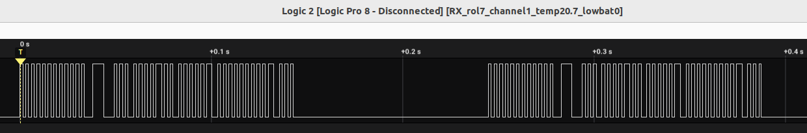

|
Erriez Oregon THN128 433MHz temperature sensor library for Arduino
1.1.0
This is an Oregon THN128 433MHz temperature sensor transmit/receive library for Arduino.
|
|
Erriez Oregon THN128 433MHz temperature sensor library for Arduino
1.1.0
This is an Oregon THN128 433MHz temperature sensor transmit/receive library for Arduino.
|
This is a 433MHz wireless 3-channel Oregon THN128 temperature transmit/receive Arduino library for ATMega328, ESP8266 and ESP32 emulating v1 protocol:

This Arduino library is optimized for low-power ATMega328 microcontroller (AVR architectures like Arduino UNO and Pro Mini 3.3V 8MHz boards).

Temperature transmitter on the left breadboard:
Receiver on the right breadboard:
Supported hardware:
Pro Mini 3V3 8MHz bare board with ATMega328 microcontroller is highly recommended. The board has no serial interface chip which reduces continuous power consumption. An external FTDI232 - USB serial interface should be connected for serial console / programming. (See red PCB on the picture) The SMD power LED should be desoldered from the Pro Mini to reduce continuous power consumption.LowPower.h functionality implemented. (By sending the temperature every 30 seconds)A packet is sent twice:

Data (see header file ErriezOregonTHN128Receive.h):

Please refer to the examples:
The callback function void delay100ms() has been removed as this was not compatible with ESP32. The application should change the code to:
AVR targets can replace delay(100) with LowPower usage:

capture from the Oregon THN128 can be opened with https://www.saleae.com/downloads/.
This project is published under MIT license with an additional end user agreement (next section).
End users shall accept the End User Agreement holding export restrictions to Russia to stop the WAR before using this project.
 1.8.17
1.8.17